Seen here is British Railways no. 60019 "Bittern"
Note the "chug chug"
sound produced by the steam escaping the pistons connected to the driving wheels.
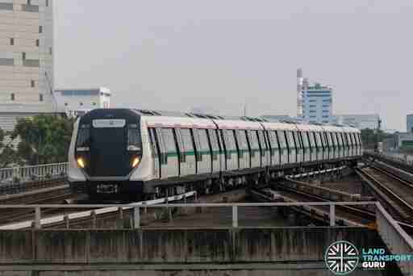
Above: Singapore MRT Alstom Movia R151
Trains
There are many many things to learn about trains all over the world. Click on the various buttons on the navbar on top to learn more!
To learn more about the way we categorize trains, click on "Types of Trains"
!
To learn more about the history of trains, click on "History of Trains"
To learn more about the parts of trains, click on "Tehnical Details" !
To learn more about the impact of trains on the world, click on "Impact of Trains" !
Types of trains!
There are so many different ways to categorise and define trains. Lets take a look at what metrics we can use to do so.
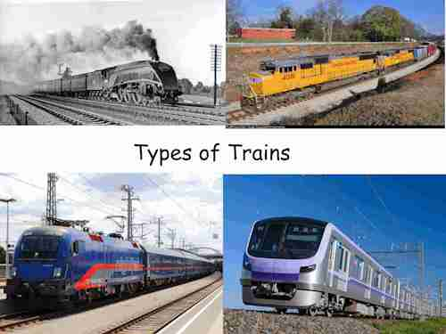
Above, clockwise from top left: LNER class A4 passenger Steam Locomotive, UK.
Union Pacific EMD SD70 freight diesel locomotive, US.
Tokyo Metro 18000 series passenger electric multiple unit, Japan
OBB Siemens ES64 "Taurus" electric passenger locomotive, Austria
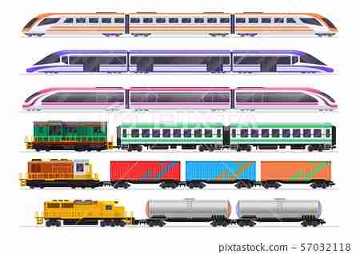
Uses of trains
The first and most common way people distinguish trains is by the way they're used.
This is
the easiest way to tell trains apart.
Generally speaking, the carriages that make up trains
are purpose built.
This segment will go into some common uses of trains.
Click on the buttons below to start exploring!
Freight
General characteristics
Freight refers to any goods or cargo transported by a vehicle.
The transport of goods (coal in particular) was the main reason why trains were even
invented at all.
Trains allow for the efficient transport of a huge amount of goods from one place or
another.
Freight trains are generally made up of separated locomotives hauling unpowered
purpose-built wagons so that the railway company has flexibility in allowing certain
segments of the train to go to different places.
Freight trains are usually as long as the country's laws allow. In the United States, you
can find freight trains of up to 4km long!
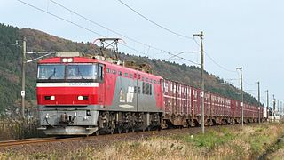
Above: A JR Freight EH500 series locomotive hauling a container freight train.
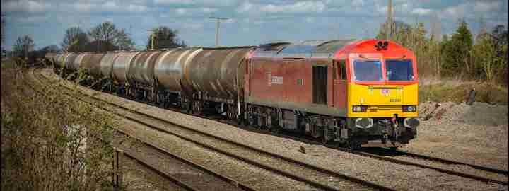Above: A British Railways class 60 locomotive hauling an tanker train. Note the rounded shape of the cargo wagons and how they differ from the container wagons.
Click the buttons above to start exploring!
Passenger
After a few years of ferrying freight, engineers realised that the train could be an
innovative solution for travel.
Passenger trains can either be made up of dedicated powered passenger cars, or dedicated
unpowered passenger cars pulled by a locomotive.
Passenger cars tend to be sleeker and cleaner than freight cars because of the fact that
people care about cleanliness standards, unlike cargo.
These trains may also differ in design dependiong on operating conditions such as speed and service intensity.
Above: A Singapore MRT R151 train on a passenger service. Note how the train is sleeker and cleaner than the freight trains. Also note how all the carriages in the train are similar.
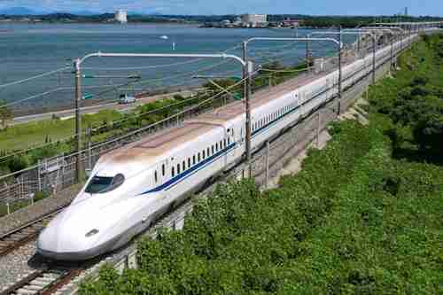Above: A JR Central N700 Series Shinkansen (bullet train). Bullet trains are a type of
passenger train typically designed for longer distances and higher speeds.
Note how much
sleeker the nose of the train is in comparison to the R151. This is to improve aerodynamic
performance at high speeds, which is certainly useful given that this train travels at over
300km/h!
Power Source
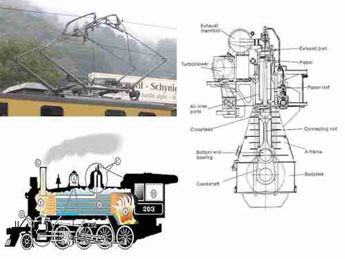Video of a steam train
Video of a diesel train
Seen here is a JR Hokkaido KiHa 183 Series (-550 Subseries) diesel multiple unit departing Asahikawa Station in Hokkaido, Japan. Note the roar of the diesel engine at 0:57 as the train departs.
Video of an electric train
Seen here is a Deutsche Bahn Class 425. Note the whirring sound from the elctric motors when the train accelerates and decelerates, and the lack of any loud roaring or revving when the train is stopped. Also note the pantograph power collector sticking out from the top of the train, making contact with the overhead wires. This is how the train gets electricity for power.
The second type of metric people can use to distinguish between types of trains is their power
source.
Types of power sources may vary due to different operator requirements, such as cost, or the
type of
Types of power sources
-
Steam
The oldest of the power sources, steam powered trains use compressed steam to drive pistons that produce rotational motion, that is then sent to the wheels. The trains are equipped with a boiler filled with water, which is heated using an onboard fire to produce the steam.
Steam power was most used pre - World War 2 when engine technology wasn't developed enough to handle the loads required to pull large trains. As technology evolved in the 1950s, trains gradually began to switch to diesel engined propulsion due to its efficiency and cost-effectiveness.More info
Some examples of the steam trains include the Union Pacific Big Boy and the JNR Class D51
-
Diesel
The second of the power sources, diesel powered trains use the energy generated by a diesel engine to move forward.
More info
Diesel trains accomplish this in various ways. Some trains, connect the engine directly to the wheels with a mechanical (such as in the case of the British Rail Class 331) or hydraulic (such as in the JNR Class DD51) transmission, allowing the train to use the engine for power directly.
In addition, some trains (such as the EMD SD70, JR HC85 series) convert the diesel power into an electric charge used to power an electric motor. These trains are categorised as "diesel-electric." -
Electric
Electric trains use electric power collected either from the power grid to make a motor spin, moving the train forward.
More info
There are several methods in which electric trains collect power from the grid.
The first is the use of a "3rd rail", an electrified metal rail that carries an electric charge that the train picks up using a so-called "shoe." This system is used mostly on metros, such as (most of) the Singapore MRT, London Underground and New York City Subway.
The second method is the use of an overhead wire. Similar to the third rail, an electric charge flows through the wire and the train picks it up using a "catenary" that is constantly in contact with the wire. This method is used mostly for railways with higher speed, such as bullet train systems like the Shinkansen in Japan and France's TGV.
Configuration
There are 2 main types of train configurations: multiple unit and locomotive hauled trains.
In a locomotive hauled train, all traction-related equipment (basically anything that allows the train to move) is concentrated into 1 single carriage of the train.
The driver sits in this carriage and controls the whole train from it.
The rest of the train contains no means for the driver to control it, besides the brakes.
This arragement is generally more flexible to run as the company can pick and choose where each individual train car and locomotive can go.
In a multiple-unit type train has the same power and traction equipment as a locomotive hauled train, but instead of having all of the traction equipment in 1 carriage, it is spread all throughout the carriages of the train.
The carriages of these trains are often semi-permanently coupled together as these carraiges many only propel themselves when coupled together.
Not all all carriages of a multiple unit train need to have motors. Some may carry auxiliary equipment such as air compressors and batterys etc.
Virtually all rapid transit lines use multiple-unit trains, including the Singapore MRT and LRT.
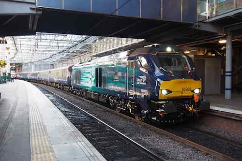
Seen here is a British Rail Class 68 locomotive hauling a passenger train. Note how different the locomotive looks from the carriages it is pulling. The Class 68 contains all the components needed to move the train forward (engine, motors etc) and the carriages are simply pulled along.
Seen here is a Singapore MRT R151 multiple-unit train. Note how the train looks very similar throughout its entire length. Since it is a multiple unit train, the traction equipment of the train is spread throughout. The lead and rear cars contain no traction motors and driving cabs, while the middle 4 cars have the motors with no driving cab.
History of trains
Trains have had a colorful ~220 year history.
They were invented out of a need to increase
efficiency in transporting big loads across varying distances.
All throughout history,
engineers across time and across the world have been seeking to improve the efficiency of the
train.
This section will discuss the long and colorful history of trains, as well as rail
transport in general.
There are several eras in the history of the humble train, lets go through them together.
The Beginning: Railways before steam.
In 1515, a cardinal named Matthaus Lang described a funicular railway in Austria's Hohensalzburg Fortress.
This railway used human and animal power, and the cars were pulled along with a rope.
This is one of the earliest descriptions of any form of rail transport in history.
You can learn about the Reisszug here:
Read the Wikipedia article here
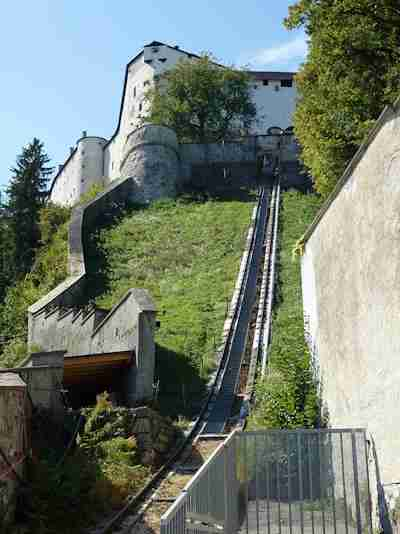
The Reisszug.
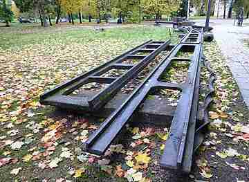
This is an example of an early cast-iron railway. This particular track segment is from the Alexandrovsky Plant's railway. It is currently exhibited in the Karelia Musem in Russia.
The Beginning: Forged from Steel.
In the 1700s, there was an uptick in iron production in Britain because of the introduction to steam-powered blast furnaces.
As a result, the Coalbrookdale company was able to fix plates of cast iron onto the wooden rails of their railway. This significantly improved the carrying capacity of their railway and improved productivity.
This started an era of iron-tracked railways all over Europe.
The discovery of the Bessemer process enabled steel to be made inexpensively. This led to the great expansion of the railways.
The Age of Steam - Part 1: The beginnings.
Things really heated up in the 1800s. In 1804, British Engineer Richard Trevithick invented the world's first working full-scale steam locomotive. It used high pressure steam to drive the train forward using a series of gears connected to the wheels. Despite revolutionising the railways, the locomotive itself never made it beyond the experimental stage.

Above: A picture of Treviththick's Engine.
The Age of Steam - Part 2: A meteoric rise
Throughout the next 100 years, steam-powered railways began to pop up and expand all over the world.
Some notable railway lines built include the East Coast Main Line in the UK, which was completed in the 1840s which connects the cities of London and Edinburgh across 393 miles (632km) of track,
the Overland Route in the US, which was completed in the 1860s and connects the cities of San Francisco and Omaha across 1,911 miles (3,075km) of track,
and the Tokaido Main Line in Japan, which was completed in the 1890s and connects the cities of Tokyo and Kobe across 589.5km (366.3 miles) of line.
These lines later became the backbones of their respective national networks.
The point is that the mid to late 1800s were the start of a "golden age" of rail travel, as can be seen by the meteoric growth of rail lines all over the world.
This was not limited to intercity railways, either. Some of the world's most famous city subway systems began popping up during this period too. Examples include the New York City Subway and The London Underground.
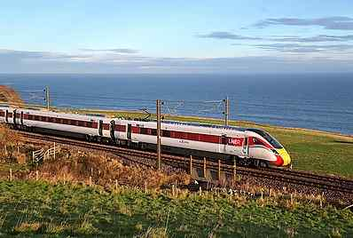
Above: a London Northeastern Railway express passenger train plies the East Coast Main Line of today.
The Age of Steam - Part 3: Speed and Power!
The 1920s and 1940s was when rail travel was arguably at its peak.
Service across the world was at an all time high, and the train was the preferred method of transport for all, regardless of financial status.
This era also saw huge leaps in technology, with the invention of high-pressure steam boilers which allowed the steam trains of the time to travel at great speeds, with the UK's A4 class locomotive, named "Mallard", hitting a breakneck speed of 126 miles per hour (206km/h) in 1938, a record that it holds to this day.
The German Railways had attempted several to out-speed the British, with trains such as the Flying Hamburger.
This marked the end of a several year long competition with the Germans, who had shifted their priorities from out-doing the English in railway tecnology to invading the whole of Eastern Europe, kickstarting World War Two.
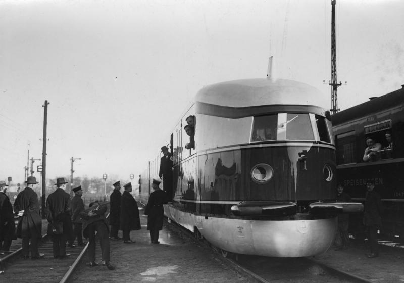
Above: The "Flying Hamburger.", picture dated 1937.
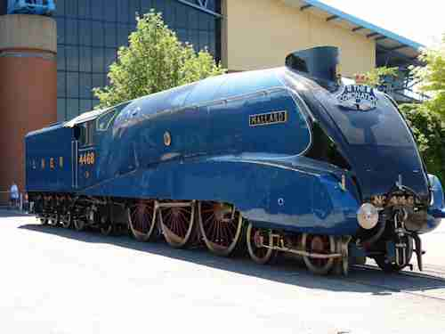Above: The "Mallard" on display.
The Age of Steam - Part 4: Wartime Woes
Then everything changed when Nazi Germany attacked.
The Second World War put an abrubt stop to the monumental advances in railway technology. Despite this, the war had many impacts on the future of rail travel.
Most of the railway infrastructure in countries affected by the war was destroyed by aerial bombardment. This set back any technological progress made over the years.
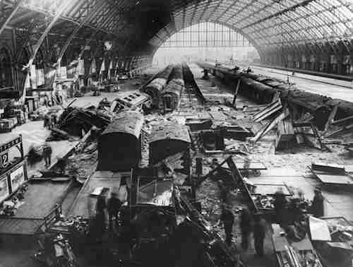
Above: A picture of London's St Pancras Station, dated 1941. The station was targetted by Germans during their bombing campaign of the UK in the early stages of the war.
The Modern Era - Part 1: The early postwar era.
Following the end of the war, many of the world's railways were in shambles. However, this gave the governments of their countries a chance to start anew.
This, however, was not the path that most of them took. Instead of re-building the railways, most governments opted instead to expand their road networks.
In addition to this, the advent of the jet airliner encouraged governments to invest in airlines instead of the railways.
This siphoned most of the railway traffic away to the roads and the skies.
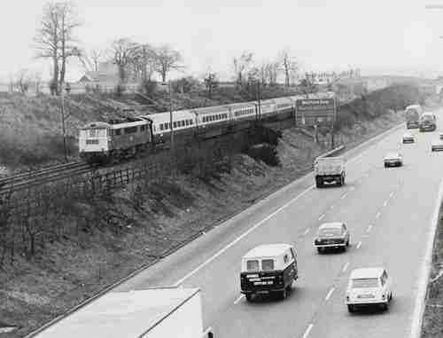
Above: The UK's M1 Motorway. This motorway directly contributed to a decrease in ridership to the East Coast Main Line, of which it runs parralel to. Seen in the background is a Class 86 locomotive pulling a passenger service.
The Modern Era - Part 2: Rail Rises Again.
Things changed again, this time thanks to the Japanese.
On the 1st of October 1964, the first ever Shinkansen (bullet train) service ran from Tokyo to Osaka. It covered the 515km journey in four hours, down from the 6hour 40minute journey that conventional trains took.
This was a massive improvement in journey time. However, that wasn't all. By the next year, the journey only took 3 hours 10 minutes, owing to an increase in track speed limits.
The world went into a frenzy after seeing what the Shinkansen had achieved. In the following decades, countries from all over the world began to develop their own form of high speed rail.
This resulted in the German Intercity Express and the French TGV, as well as the railways that rely on technology developed by these 2 railways.
This brings us to today. Rail travel is growing, with increasing passenger numbers year on year. As technology evolves, trains will go further, faster. Magnetic levitation (Maglev) Trains that can go over 500 km/h are already in their testing phase, and the first maglev line is slated for completion in 2027.
Suitably enough, the line is being built in Japan, the very same country that built the innovative shinkansen all those years ago. The very same country that helped make rail rise again.
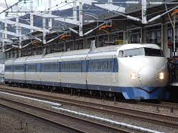
Above: The 0 Series Shinkansen. This was the first ever type of train used on the Shinkansen lines. It had a top speed of 220km/h and sat up to 1,300 people.
Technical Details
Trains are complex mechanical marvels with many complicated parts. This section will explore the various parts of a typical train. Because of the fact that the presence of some train parts will vary wildly depending on the type of train, we've decided to stick to some generally found parts on a train.
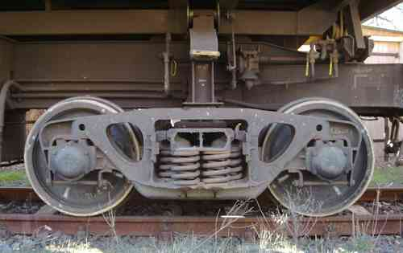
Bogies
Bogies are modular framework that carries the wheels, axles, and any related equipment (brakes, motors etc) on a train. It is mounted on the undercarriage, which is below the main carriage of the train.
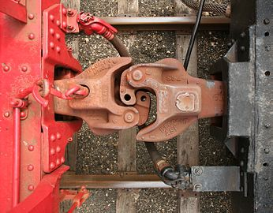
Couplers
Couplers are mechanisms typically placed at either end of a rail vehicle that connects them together, allowing them to form a train.
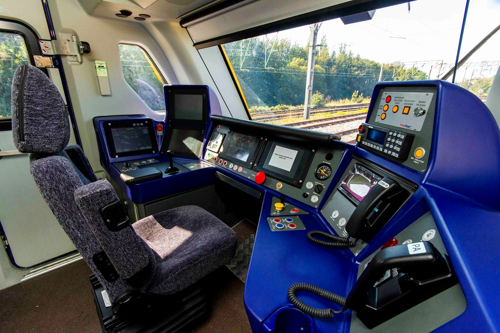
The Cab
The cab is where the train driver sits. It contains all necessary controls needed to drive the train, such as the throttle and brake handles, the reverser (which determines direction of travel), the horn, and any relevant safety systems required.
Click any of the buttons to find out more about train parts!
Quiz time!
Can YOU answer these awesome questions about trains correctly? Let's fine out :)